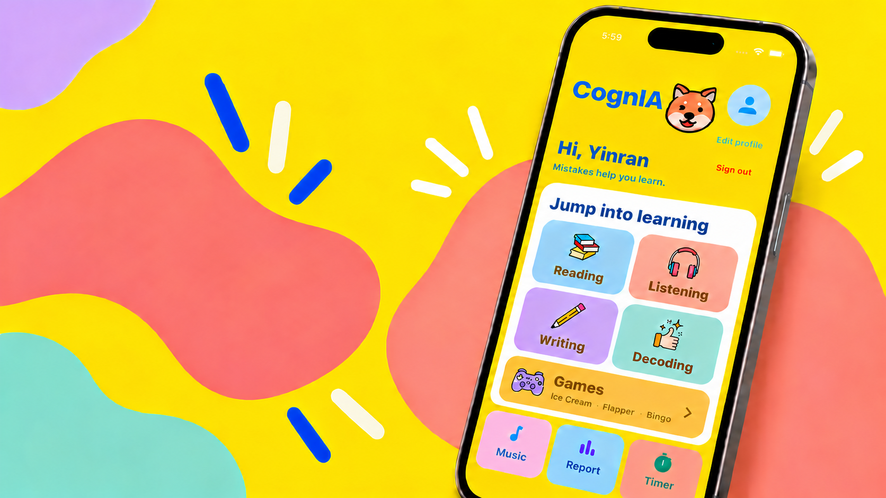

AI PRODUCT · INTERACTION · BUILDING
Selected
Works.
01 — FEATUREDCOGNIA

TEAM PROJECT / 2026CHILDREN’S ENGLISH LEARNING APP
CognIA
面向儿童的英语学习应用，围绕阅读、听力、写作与解码设计学习模块，并参与交互设计与前后端集成。
MORE WORKSELECTED PROJECTS
SEARCH / MATCH
Job Search Radar
基于 LangGraph 的岗位搜索 Agent，自动搜索校招岗位、提取关键信息，并按照个人条件完成匹配和去重，让找工作这件事更高效。
 RAG / DIAGNOSE
RAG / DIAGNOSEManagement Diagnosis Agent
结合混合检索、结构化切片与引用约束生成，构建管理知识问答与分析流程，让每个判断都能回到对应的资料依据。
HAND / DRAW
Frost Hand Magic Toy
一个基于手势识别的互动粒子玩具，用手部动作在屏幕上生成冰雪般的光迹和绘图效果，重点是即时反馈与趣味探索。